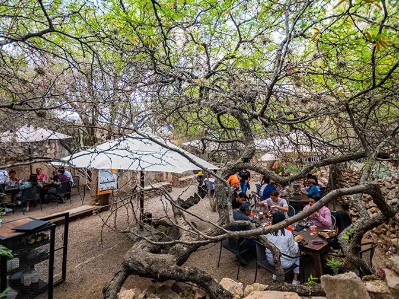
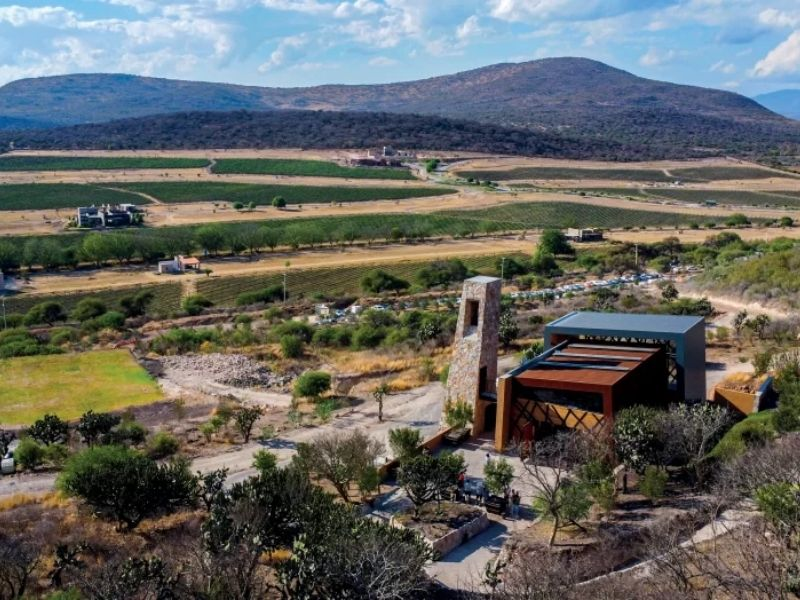
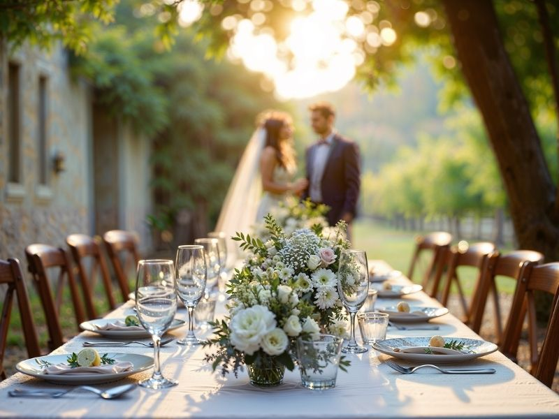

Hemos diseñado una serie de actividades inmersivas para que interactúes con la cultura del vino desde diferentes perspectivas. Desde recorridos guiados hasta cenas de cinco tiempos al atardecer.

Disfruta de nuestro Tour Tradicional guiado por expertos sommelieres, recorriendo los viñedos y la zona de producción. Si buscas una experiencia profunda, nuestro taller Enólogo por un Día te permite crear tu propio ensamble, embotellarlo y diseñar tu etiqueta personalizada.

Contamos con restaurantes de primer nivel donde la cocina de autor se encuentra con el producto local de kilómetro cero. Consulta nuestro menú de degustación de 5 tiempos diseñado específicamente para maridar a la perfección con nuestras etiquetas más exclusivas.

Convierte nuestros paisajes de vides y arquitectura contemporánea en el escenario de tu evento soñado. Contamos con un equipo de wedding planners y organizadores corporativos para gestionar banquetes, iluminación y logística integral, garantizando el éxito de tu celebración.